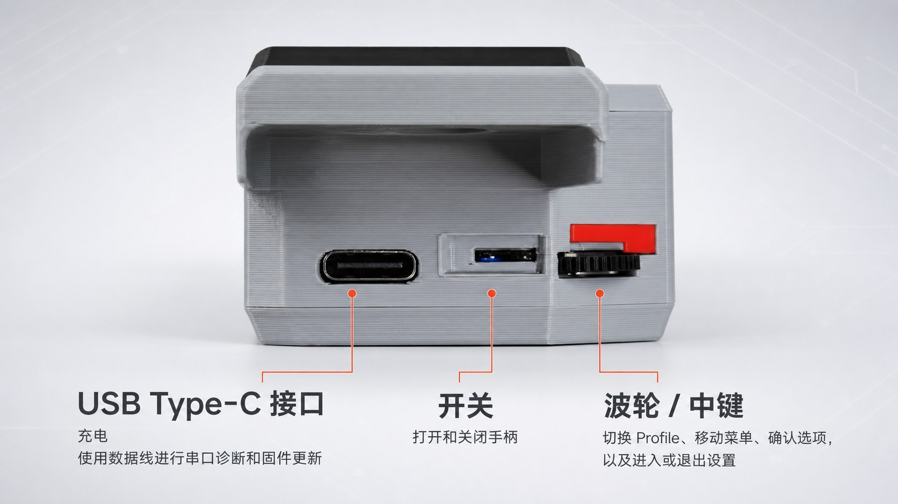
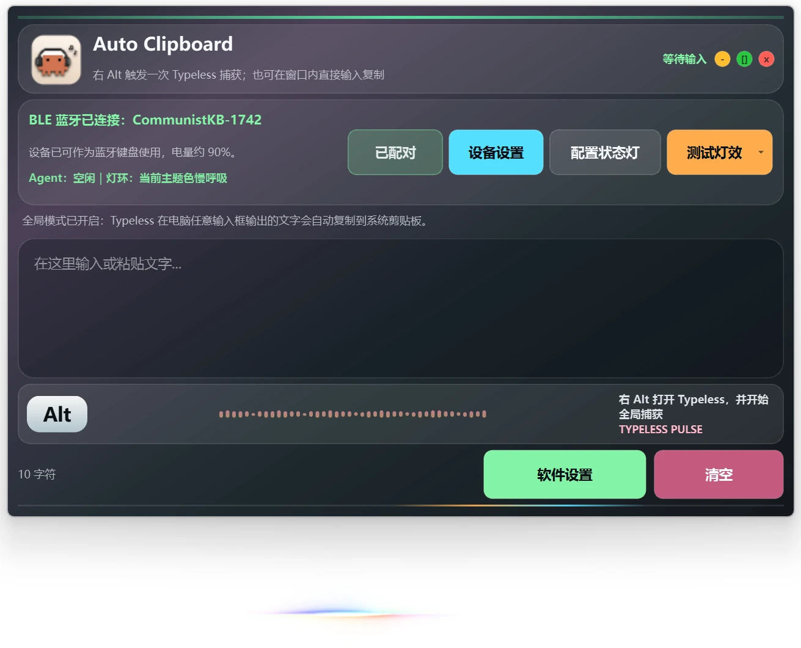
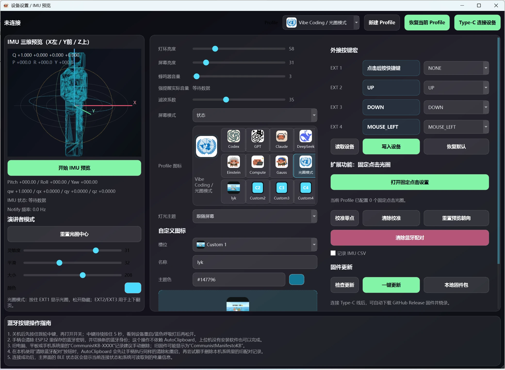

SUPPORTED SYSTEMS
选择你的系统
三个系统都可以下载 AutoClipboard，但测试成熟度不同。请只下载与你的电脑系统对应的桌面软件安装包。
Windows
成熟测试下载 AutoClipboardSetup-<version>.exe，双击后按安装向导完成安装。
Ubuntu
成熟测试下载 auto-clipboard_<version>_<arch>.deb，使用系统软件安装器安装。
macOS
测试中下载 AutoClipboard-<version>-macOS.dmg。安装包已经提供，但兼容性仍在继续测试。
Windows 怎么装
- 下载 EXE 安装包。
- 双击运行并完成安装。
- 确认应用列表里出现 AutoClipboard；先按下方首次使用流程测试蓝牙宏键，再启动软件使用完整功能。
Ubuntu 怎么装
- 下载与你架构相符的 DEB 安装包。
- 使用系统软件安装器打开并安装。
- 先用图形化蓝牙设置连接手柄；只有看不到设备名称时再查阅仓库中的 Ubuntu 进阶排障。
macOS 怎么装
- 打开 DMG 安装包。
- 把 AutoClipboard 放入“应用程序”。
- 首次启动和连接仍属于测试范围；遇到问题时请记录 macOS 版本、软件版本和错误截图。
| 文件类型 | 是什么 | 普通用户是否需要 |
|---|---|---|
.exe / .deb / .dmg | AutoClipboard 桌面软件 | 根据自己的系统选择一个 |
| 固件 ZIP | 手柄内部程序 | 首次使用不需要 |
| Skill ZIP | 给支持 Agent Skills 的大模型使用 | 可选 |
CH343 是 Windows 串口驱动。日常蓝牙配对不需要安装它；只有 Windows 插入数据 Type-C 线后仍没有出现 COM 端口时，才需要查看驱动说明。
QUICK START
6 步完成首次使用
下面六步只做第一次连接需要的事情。先不要更新固件，也不要急着删除蓝牙记录。
- 1
下载正确的桌面软件
Windows 选择 EXE，Ubuntu 选择 DEB，macOS 选择 DMG。浏览器显示下载完成，并且文件后缀与你的系统一致，就可以继续。
- 2
安装 AutoClipboard
按照系统安装向导完成安装。能在应用列表里看到 AutoClipboard 就算成功；暂时不用打开，也不要进入固件更新。
- 3
给手柄充电并唤醒
接上 USB Type-C 供电，打开或拿起手柄。小屏亮起并显示蓝牙状态就可以继续；只有需要串口诊断时，才必须使用支持数据传输的线。
- 4
连接 CommunistKB-XXXX
打开电脑的蓝牙设置，选择扫描到的完整名称。系统显示“已连接”或“已配对”就算成功；末尾四位编号不需要自己输入。
- 5
确认从 PAIR 变成 LINK
小屏显示
PAIR表示可以配对；连接成功后会显示LINK。如果显示WAIT，手柄正在等待已经保存的电脑。 - 6
在纯文本输入框中测试，再打开完整功能
打开记事本或其他纯文本编辑器，按一下
Enter或Ctrl+V对应的宏键。能产生输入，说明蓝牙键盘功能已经正常；再启动 AutoClipboard 使用状态显示、配置和其他完整功能。
HARDWARE
先认识最常用的部件
| 部件 | 用最简单的话说明 |
|---|---|
| USB Type-C | 充电；使用数据线时还可以诊断设备和更新固件 |
| 彩色小屏 | 告诉你当前使用场景、蓝牙、电量和 Agent 状态（编程助手当前处于工作、等待或完成等状态） |
| 波轮 | 平时切换使用场景配置（Profile），在菜单里上下移动 |
| 波轮中键 | 单击确认，双击进入 Settings，长按返回或退出 |
| 侧面 4 枚宏按键 | 发送当前 Profile 保存的四个快捷键宏 |
| 正面灯环 | 用颜色和动画提示输入、工作、等待、完成或警告 |
BLUETOOTH
看懂三个蓝牙状态
手柄的完整蓝牙名称是 CommunistKB-XXXX。XXXX 是每台手柄自己的四位编号，系统扫描时已经包含在名称里。
- 打开 Windows、Ubuntu 或 macOS 的系统蓝牙设置。
- 选择“添加设备”，等待手柄显示
PAIR。 - 选择完整的
CommunistKB-XXXX。 - 配对后等待小屏显示
LINK，再去纯文本输入框测试宏键。
MULTI HOST
在三台电脑之间正确切换
手柄提供 3 个主机槽位。只在旧电脑上点击“断开”不会自动切换手柄槽位；每次换电脑，都要先在手柄的 BLE Hosts 页面选择目标槽位。
切回已经配对过的电脑
- 双击波轮中键进入
Settings。 - 拨动到
BLE Hosts，单击进入。 - 找到目标电脑对应的
SAVED槽位并短按。 - 小屏会先显示
WAIT；打开目标电脑蓝牙后，连接成功会变成LINK。
连接一台从未配对的新电脑
- 进入
Settings > BLE Hosts。 - 选择一个
EMPTY空槽位并短按。 - 看到
PAIR后，在 120 秒内打开新电脑的系统蓝牙设置。 - 添加完整名称
CommunistKB-XXXX，并等待手柄显示LINK。
三个槽位都已占用时，只长按删除确认不再使用的 SAVED 槽位，再短按变成的 EMPTY 槽位进行配对。开机时按住中键约 5 秒会清空全部槽位，仅用于恢复出厂，不是日常切换操作。清槽只会删除手柄端密钥；电脑仍可能保留旧密钥，必须先在系统蓝牙设置中忽略或移除对应的 CommunistKB-XXXX，再让手柄保持 PAIR 并重新添加。
CONTROLS
波轮与小屏操作
波轮用于切换 Profile 和移动菜单，中键用于确认、进入设置或返回；小屏会同步显示当前 Profile、蓝牙状态和菜单提示。

| 操作 | 平时看到主界面时 | 进入 Settings 后 |
|---|---|---|
| 向上或向下拨动 | 切换 Profile | 移动选项或调整数值 |
| 单击中键 | 打开 Profile 绑定的应用、快捷方式或网页 | 进入项目、开始编辑、确认或保存 |
| 双击中键 | 进入 Settings | 通常不需要 |
| 长按中键 | 也可以进入 Settings | 取消、返回上一页或退出 |
不要尝试按住中键同时拨动波轮；机械结构不支持这种组合动作。
默认 Vibe Coding Profile 的四枚宏按键
默认的 Vibe Coding Profile 将四枚按键设置为 Right Alt、Enter、Ctrl+V 和 Ctrl+Alt+0。这四个按键都可以在 AutoClipboard 中重新配置。

AUTOCLIPBOARD
宏键能用，不代表软件已经连接
系统把手柄当作蓝牙键盘后，四枚宏键就可以发送快捷键。AutoClipboard 使用另一条软件连接来读取状态、修改设置和显示 Agent 信息，所以两者可能一条正常、另一条还没有就绪。


基础蓝牙宏不依赖 AutoClipboard。Agent 状态、Profile 快开、惯性测量单元（IMU）姿态预览、演讲光圈和深度设置需要 AutoClipboard 保持运行。这里的 Agent 状态连接配置，就是把编程助手的工作状态发送给 AutoClipboard，再显示到手柄上。
软件、完整说明和 Windows 驱动
Windows 用户可直接下载 AutoClipboard v0.3.65；国内默认使用 Gitee，GitHub 作为备用。其他系统、完整使用指南和固件仍在发布仓库中提供。
TROUBLESHOOTING
先按现象排查，不要急着重置
删除配对、重置蓝牙和更新固件都不应该是第一步。先找到属于你的现象，再做下面的低风险检查。
从另一台电脑切换后，新电脑连接不上
旧电脑“断开”不等于手柄已经切换。双击波轮中键进入 Settings > BLE Hosts：如果新电脑以前配对过，短按它对应的 SAVED 槽位，等待 WAIT → LINK；如果从未配对，短按 EMPTY 槽位，看到 PAIR 后再在 120 秒内从新电脑添加 CommunistKB-XXXX。不要把开机按住中键 5 秒清空全部槽位当作普通切换。
清空手柄槽位后，macOS 显示 PAIR 仍连接失败
清槽会删除手柄中的蓝牙密钥，但 Mac 仍可能保留原来的配对密钥。打开 macOS 系统设置的蓝牙页面，只对当前完整名称 CommunistKB-XXXX 选择“忽略此设备”或移除；不要再次清空手柄。保持第一个空槽显示 PAIR，并在 120 秒内重新添加该设备，成功后等待小屏变为 LINK。
系统里搜不到 CommunistKB-XXXX
先唤醒手柄并靠近电脑。进入 Settings > BLE Hosts，选择 EMPTY，确认小屏出现 PAIR 后再重新扫描。如果三个槽位都已占用，先确认哪台电脑不再需要，再删除对应槽位。
已经配对，但宏键不能输入
确认小屏显示 LINK，然后在记事本等纯文本编辑器里测试 Enter 或 Ctrl+V。先不要删除配对；也要确认当前 Profile 确实配置了这些宏。
宏键能输入，但 AutoClipboard 显示未连接
这通常表示系统蓝牙键盘已经正常，但软件连接还没有就绪。启动或重启 AutoClipboard，保持手柄唤醒，并确认软件查找的是同一个 CommunistKB-XXXX。
宏键能用，但没有 Agent 状态
蓝牙键盘功能已经正常。还需要让 AutoClipboard 保持运行，并完成“把编程助手状态发送给软件”的 Agent 连接配置。可以使用发布仓库中的 AI Coding Handle Skill 进行只读检查。
Windows 插入 Type-C 后没有 COM 端口
先更换确认支持数据传输的线，再尝试电脑上的直连 USB 接口。如果 Windows 设备管理器仍显示未知设备或 CH343/WCH 设备，再安装 CH343 官方驱动。
Ubuntu 蓝牙列表只显示无名地址
先确认手柄正在显示 PAIR，并优先重试系统图形蓝牙设置。按地址识别设备需要额外核对，不要随便选择一个无名地址；请按照正式发布仓库完整指南中的 Ubuntu / BlueZ 流程操作。
macOS 测试版无法启动或连接
确认下载的是 DMG，而不是 Windows 或 Ubuntu 安装包。重新记录 macOS 版本、AutoClipboard 版本、完整蓝牙名称和错误截图，再通过发布仓库反馈；macOS 当前仍处于测试阶段。
软件提示可以更新固件
首次使用不需要更新固件。只有确认实体手柄板型、目标版本和固件包完全匹配后，才按照正式发布仓库的受控流程操作；不要尝试其他板型固件或整片擦除。
需要更详细的步骤？
官网说明负责帮助你快速开始；发布仓库继续维护完整用户指南、Ubuntu 进阶蓝牙排障、Agent 状态配置、驱动和固件维护说明。